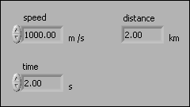
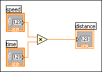
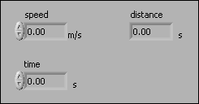
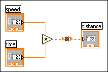
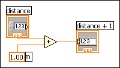
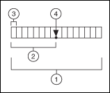
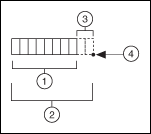
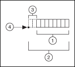

LabVIEW represents numeric data as floating-point numbers, fixed-point numbers, integers, unsigned integers, and complex numbers.
|
Note��The difference among the numeric data types is the number of bits they use to store data and the data values they represent. |
Certain data types also provide extended configuration options. For example, you can associate physical units of measure with floating-point data, including complex numbers, and you can configure the encoding and range for fixed-point data.
You can associate physical units of measure, such as meters or kilometers/second, with any numeric control or indicator that has floating-point representation.
Units for a control appear in a separate owned label, called the unit label. Display the unit label by right-clicking the control and selecting Visible Items�Unit Label from the shortcut menu. Right-click the unit label and select Build Unit String from the shortcut menu to edit the unit label.
When LabVIEW displays the unit label, you can enter a unit using standard abbreviations such as m for meters, ft for feet, s for seconds, and so on.
|
Note��You cannot use units in Formula Nodes. |
When you associate units with an object, you can wire only objects that have compatible units. LabVIEW uses strict type checking to verify that units are compatible. If you wire two objects with incompatible units, LabVIEW returns an error. For example, LabVIEW returns an error if you wire an object with mile as its unit type to an object with liter as its unit type, because a mile is a unit of distance and a liter is a unit of volume.
The following VI shows wiring objects with compatible units. In this VI, LabVIEW automatically scales the distance indicator to display kilometers instead of meters because kilometers is the unit for the indicator.


An error occurs in the following VI because distance has a unit type of seconds. To correct the error, change seconds to a unit of distance, such as kilometers, as shown in the previous VI.


Some VIs and functions are ambiguous with respect to units. You cannot use these VIs and functions with other terminals that have units. For example, the Increment function is ambiguous with respect to units. If you use distance units, the Increment function cannot tell whether to add one meter, one kilometer, or one foot. Because of this ambiguity, you cannot use the Increment function and other functions that increment or decrement values with data that have associated units.
To avoid ambiguity in this example, use a numeric constant with the proper unit and the Add function to create your own increment unit function, as shown in the following block diagram.

The fixed-point data type is a numeric data type that represents a set of rational numbers using binary digits, or bits. Unlike the floating-point data type, which allows the precision and range of the data to vary, you can configure fixed-point numbers to always use a specific number of integer and fractional bits.
|
Note��To represent a rational number using the fixed-point data type, the denominator of the rational number must be reducible to a power of 2, because the binary number system is a base-2 number system. |
Use the fixed-point data type when you do not need the dynamic range of floating-point representation or when you want to work with a target that does not support floating-point arithmetic.
|
Note�� (FPGA Module) Refer to Using the Fixed-Point Data Type for more information about using the fixed-point data type on an FPGA target. Evaluate your usage of numeric data types to determine which data type best suits your design. |
A fixed-point number has a fixed number of integer and fractional bits. The integer bits appear to the left of the binary point, and the fractional bits appear to the right of the binary point. Because you can specify the exact number of bits you want to use, the binary point, which is the binary equivalent of the decimal point, has a fixed position.
For example, you can configure LabVIEW to represent the rational number 0.5 as a fixed-point number with 8 total bits and 4 integer bits.
| Rational Number | Fixed-Point Equivalent |
|---|---|
| 0.5 | 0000.1000 |
You also can configure LabVIEW to represent the same rational number as a fixed-point number with 16 total bits and 8 integer bits.
| Rational Number | Fixed-Point Equivalent |
|---|---|
| 0.5 | 00000000.10000000 |
Fixed-point numbers differ from floating-point numbers in that floating-point numbers allow the number of integer and fractional bits to vary when you perform an operation on the floating-point number. In other words, the binary point can move, or float, in a floating-point number.
|
Note��If you do not specify the exact number of bits you want to use to represent the fixed-point equivalent of a rational number, LabVIEW adjusts the number of bits to avoid data loss, if possible. LabVIEW cannot handle numbers longer than 64 bits. |
To set a number to fixed-point representation, right-click the numeric object and select Representation from the shortcut menu to change the data type of the object. You can configure the encoding for fixed-point numbers. You also can specify whether to include an overflow status with fixed-point numbers and how Numeric functions handle overflow and rounding conditions for fixed-point numbers. To configure a fixed-point number, right-click a constant, control, indicator, or Numeric function and select Properties from the shortcut menu to display the Numeric Properties, Numeric Constant Properties, or Numeric Node Properties dialog box.
Specify the binary encoding of a fixed-point number when you want the number to conform to a certain bit size.
LabVIEW displays this configuration in the following format in the Context Help window when you move the cursor over a wire that carries fixed-point data:
<encoding, word length, integer word length>
For example:
<s, 16, 8> is a signed, 16-bit number with eight integer bits. The following image represents a signed number with a word length of 16 and an integer word length of 8.

| 1 | Word length (16 bits) |
| 2 | Integer word length (8 bits) |
| 3 | Sign bit |
| 4 | Binary point |
If the integer word length is larger than the word length, LabVIEW does not store the integer bits that exceed the word length. The following image represents a number with a word length of 8 and an integer word length of 10.

| 1 | Word length (8 bits) |
| 2 | Integer word length (10 bits) |
| 3 | Integer bits not stored |
| 4 | Binary point |
If the integer word length is negative, LabVIEW does not store any integer bits and also does not store the number of fractional bits equal to the negative number, starting from the binary point. The following image represents a number with a word length of 8 and an integer word length of �2.

| 1 | Word length (8 bits) |
| 2 | Word length minus Integer word length (8 bits minus �2 bits) |
| 3 | Fractional bits not stored |
| 4 | Binary point |
LabVIEW calculates the range and delta for a fixed-point number according to the values you specify for the encoding of the fixed-point number.
LabVIEW expresses this configuration in the following format in the Context Help window when you move the cursor over a wire that carries fixed-point data:
[Minimum, Maximum]:Delta
For example:
[�4, 4]:1 has a minimum value of �4, a maximum value of 4, and a delta of 1.
When you perform an arithmetic operation on fixed-point numbers for which you specified a word length, the position of the binary point does not change from the position you specify before you run the VI. This behavior contrasts with floating-point numbers, where the position of the binary point or decimal point can shift at run time due to an arithmetic operation. If the result of an arithmetic operation requires a larger word length than the fixed-point configuration allows, you might lose data from the result of the operation.
LabVIEW adjusts the word length of output values of Numeric functions to avoid data loss, if possible. However, LabVIEW cannot avoid data loss if the word length required to represent the output value exceeds the maximum you specify or the LabVIEW maximum of 64 bits. To configure output settings for a Numeric function, right-click the function and select Properties from the shortcut menu to display the Numeric Node Properties dialog box.
Overflow and rounding conditions can occur when you perform an arithmetic operation on fixed-point numbers or when you use the To Fixed-Point function to convert numeric data to fixed-point data. LabVIEW configures the outputs of Numeric functions to avoid overflow or rounding of fixed-point data, if possible. However, LabVIEW cannot avoid overflow or rounding under certain conditions.
For example, if you wire fixed-point values to Numeric functions such as Add, Subtract, Multiply, and Square, LabVIEW increases the word length of the output value to accommodate the result of the operation by default. This behavior is similar to the behavior of floating-point values. However, if avoiding overflow or rounding requires an output value that exceeds the maximum word length that LabVIEW accepts or the maximum word length that you specify, overflow or rounding conditions can occur. LabVIEW accepts a maximum word length of 64 bits.
|
Note��If you wire fixed-point values to the Divide function, the Reciprocal function, or the Square Root function, rounding conditions always occur because the precision of the results can be infinite. |
Other conditions where overflow or rounding can occur include type cycles and values that you cannot represent exactly in a base-2 number system.
Overflow occurs when the result of an operation is outside the range of values that the output type can represent. You can select between the following overflow modes to handle overflow:
|
Note��Typically, the Saturate mode requires additional hardware resources on an FPGA. |
To determine whether overflow occurs, you can configure a fixed-point number to include an overflow status. When you include an overflow status in a fixed-point number, LabVIEW allocates additional storage space to track whether the fixed-point number is the result of an operation that overflowed. After you configure a fixed-point number to include an overflow status, you can display an overflow status LED on fixed-point controls, constants, and indicators. This LED lights up when the overflow status of the fixed-point number is TRUE. You also can use the Fixed-Point Overflow? function to determine the overflow status of a fixed-point number. Use the Fixed-Point functions to manipulate the overflow status of a fixed-point number.
|
Note��LabVIEW does not check for underflow conditions on fixed-point numbers. |
When you use the Comparison functions to compare fixed-point numbers, LabVIEW ignores the overflow status and compares only the numbers. For example, if you use the Equal? function to compare a fixed-point value of 1.5 with an overflow status of TRUE to a fixed-point value of 1.5 with no overflow status, LabVIEW returns TRUE.
To configure output settings for a Numeric function, right-click the function and select Properties from the shortcut menu to display the Numeric Node Properties dialog box. You can use this dialog box to configure how LabVIEW handles overflow and rounding conditions.
Rounding occurs when the precision of the input value or the result of an operation is greater than the precision of the output type. LabVIEW coerces the input value to a value with the same precision as the output type. For example, assume the output type can represent the successive values s and t. If the result of an operation is the value x, and x is between s and t such that s<x<t, rounding occurs because the output type cannot represent x exactly.
You can select from the following rounding modes to handle rounding:
|
Note��The performance impact of any rounding mode is minimal. However, the performance impact can be significant if you run a VI that handles overflow on a target such as FPGA. |
Refer to Using the Fixed-Point Data Type for more information about performance impact on an FPGA.